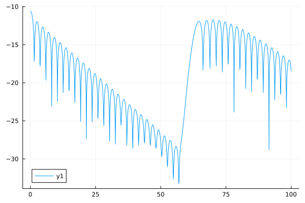

using SemiLagrangian
using Plots
function run_simulation(nbdt, sz, dt, interp, tab_coef)
epsilon = 0.001
xmin, xmax, nx = 0., 4π, sz[1]
vmin, vmax, nv = -6., 6., sz[2]
mesh_x = UniformMesh(xmin, xmax, nx)
mesh_v = UniformMesh(vmin, vmax, nv)
states = [([1, 2], 1, 1, true), ([2, 1], 1, 2, true)]
adv = Advection((mesh_x, mesh_v), [interp, interp], dt, states;
tab_coef, timeopt = NoTimeOpt)
kx = 0.5
fct_x(x) = epsilon * cos(kx * x) + 1
fct_v(v) = exp(-v^2 / 2) / sqrt(2π)
lgn_x = fct_x.(mesh_x.points)
lgn_v = fct_v.(mesh_v.points)
data = dotprod((lgn_x, lgn_v))
pvar = getpoissonvar(adv)
advd = AdvectionData(adv, data, pvar)
time = Float64[]
el = Float64[]
for i = 1:nbdt
while advection!(advd) end
push!(time, advd.time_cur)
push!(el, compute_ee(advd))
end
return time, el
end
nbdt = 1000
sz = (64, 64)
dt = 0.1
interp = Lagrange(9, Float64)
tab_coef = strangsplit(dt)
time, el = run_simulation( nbdt, sz, dt, interp, tab_coef)
plot(time, 0.5 .* log.(el.^2))
